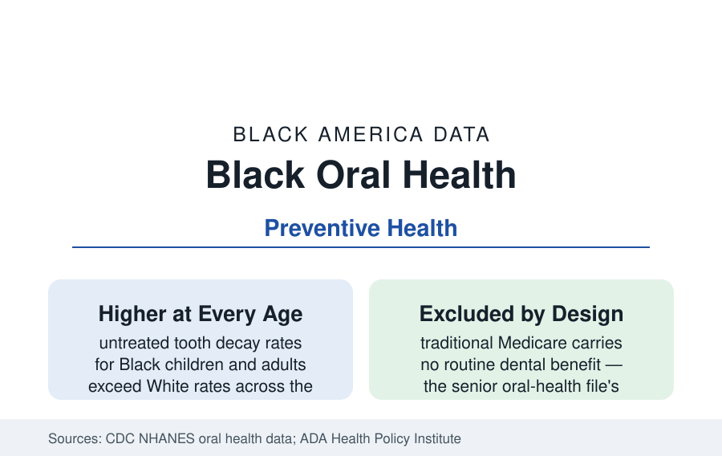

Black Public Health
Oral Health in Black America: The Mouth the System Treats Separately
Black Americans record higher rates of untreated tooth decay and tooth loss at every age — in the one branch of health care Medicare mostly excludes. The CDC dental data.

Oral health is American health care's segregated annex: dentistry runs on its own insurance, its own schools, and its own benefit exclusions, and Black Americans' dental data record the arrangement's effects at every age — higher untreated decay, more tooth loss, less preventive care — in the CDC's examination surveys. This article reports the oral health file.
Decay: The Examination Data
The NHANES oral examinations (the CDC's dentists examining probability samples — measured disease, not self-report) draw the pattern precisely. Untreated tooth decay affects Black children at rates roughly one-and-a-half times White children's in the recent series, with the gap present from the primary teeth; Black adults record untreated decay in the range of a third or more of the population against materially lower White rates, and complete tooth loss (edentulism) among older Black adults runs above the White rate, narrowing only as both fall across the fluoridation generations. Periodontal disease follows the same distribution at higher severity shares. The causal chain the dental literature draws runs through the access variables — dental visits in the past year (Black adults in the range of three-fifths against two-thirds-plus overall in the survey data), fluoride exposure's historical geography, the sugar environment of the nutrition file — and lands in the emergency data: dental pain is among the most common reasons for emergency-department visits that end without definitive treatment, a visit class concentrated in the Medicaid and uninsured populations.
The Benefit Structure: Why Dental Is Different
The dental file's disparities are engineered by its financing, and the policy data are blunt. Traditional Medicare excludes routine dental care by statute — the senior population's dental coverage depends on Medicare Advantage plans' supplemental benefits (variable, capped) or out-of-pocket payment, so the oral health of the seniors profile's population deteriorates on a schedule the medical data then record (the nutrition, diabetes-control, and aspiration-pneumonia literatures all carry oral-health variables). Medicaid's adult dental benefit is optional for states and ranges from comprehensive to emergency-only to none by state and budget cycle — the benefit is among the first cut in state fiscal squeezes, and dentist participation in Medicaid (a minority of dentists in most states in the ADA's data) limits even the covered benefit's reach. Children's dental, by contrast, is a mandatory Medicaid/CHIP benefit — and the children's data are correspondingly the file's best trend lines, though the utilization gap persists within coverage.
The Workforce and the Access Map
The dental workforce mirrors the physician file's pattern at thinner numbers: Black dentists form roughly four percent of the profession in the ADA's data — against the population's 13.6 — with Meharry's and Howard's dental schools (two of the profession's historic Black institutions) producing a large share of the total. The access map compounds it: dental Health Professional Shortage Areas cover much of the Black Belt and the inner-urban districts of the state and city profiles, the dental-therapist and expanded-hygienist reforms (midlevel dental providers, authorized in a growing list of states over the profession's internal debate) target exactly those maps, and the school-based sealant programs (the CDC's evidence-strong intervention) reach high-poverty schools at rates the program data show improving the children's decay gap where coverage is complete — one of the file's few interventions with disparity-reduction in its own results.
The Mouth-Body Ledger
The clinical literature closes the annex's false wall: periodontal disease is associated in the research with diabetes control (bidirectional — the diabetes profile's patients are the dental file's), cardiovascular outcomes, adverse pregnancy events, and dementia risk in the cohort data, with causal claims graded carefully by the reviews. The practical translation is in the integration experiments the current data track: medical-dental record integration, fluoride varnish in pediatric medical visits (now standard-of-care and billed through medicine), dental screening in diabetes clinics, and the FQHC model (the health center program co-locates dental by design — the safety net's dental chairs are the Black Belt's and the districts' main access point). The oral health data's trend is genuinely two-directional — children's measures improving, the senior and benefit files stagnant — which is what a financing-driven disparity looks like when one age group's benefit is mandatory and the other's is excluded.
Reading the Dental Data
Oral health is the disparity with the simplest mechanism in the health section: a body part was carved out of the insurance system, and the carve's consequences distribute by income and race in the examination data with mechanical fidelity. Black America's mouths record, in decay and missing teeth, the exact shape of a policy choice — the file's value is that it proves, in the most literal tissue, how the benefit design becomes biology.
More in Black Public Health
Hypertension Among Black Adults: Prevalence, Control, and Consequences
About 55 percent of Black adults have hypertension — the highest rate of any U.S. group. Prevalence, onset, control, and the stroke, heart, and kidney consequences in the data.
Diabetes Among Black Adults: Prevalence and Complications
Nearly one in five Black adults has diabetes, diagnosed or undiagnosed — and its complications fall with particular weight. The CDC data on prevalence, control, and outcomes.
Black Life Expectancy: The Gap at Birth and Its Causes
Black life expectancy at birth is about 73 years, roughly five years below the national figure — the summary measure of every health gap in this section. The CDC data.
Source: Centers for Disease Control and Prevention, National Health and Nutrition Examination Survey oral health data; American Dental Association Health Policy Institute; CMS Medicaid dental data.